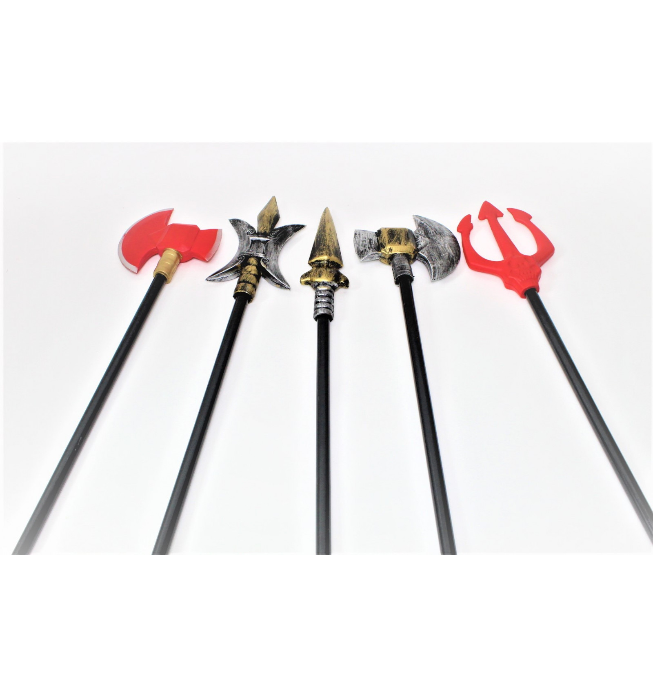
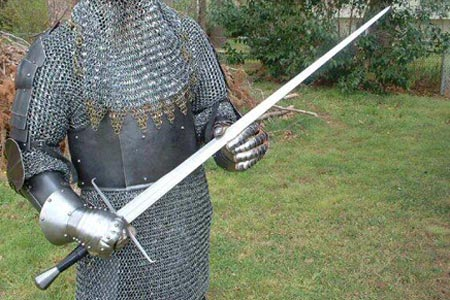

kalavijas
2020.10.29 10:31
enacademic.com EN RU DE FR ES Remember this site Dictionary of the Lithuanian Language Interpretations Translations Books
Dictionary of the Lithuanian Language
kalavijas
kalavijas: translationkalavìjas sm. (2) 1. SD 41,147, MŽ , R , KlG 2, [ K ], J.Jabl , M , NdŽ plieninis, ilgas, siauras, aštriais ašmenimis kertamasis ginklas, kardas: Žemaitis už kryžiuotį ir kalaviju narsesnis, ir klasta gudresnis A.Vien . Priešas ties tavim iškėlęs kalaviją laiko S.Nėr . Jam prie šono kalavijas rš . Kelias slidus kap kalavijas Mrj . Aš parnešiu sau iš Prūsų kalaviją kietą Mair . Nepakels kalavijo tauta DP 38. Jį kalaviju... padobdavo DP 110. Dūšią pereis kalavijas BP I114. Kalavijas makštyse nešiojamas SP II7. Pigiaus iškęsčia kalavijo kirtimą ..., neg neprietelių žertus ir jų apijuokus PK 60. Kad juos vedu sandarion, kalavijus siekia PK 90. Kalaviju gina MT 13. Slidus kaip kalavijas ST 321. Kalavijas abišaliai aštras, viena ranka turimas SD 239. 2. senoviško šulinio svirties dalis, permesta per įkastą rąstą (pėdžią) stora kartis, prie kurios vieno galo pririšamas sunkus daiktas (svaras), o prie kito kartelė su kibiru, svirties persvara, permėtė, permata, plunksna: Neatnešiau vandenio, ba nulūžęs kalavìjas Dg . Jau mūsų [šulnio] kalavìjas supuvo Vlk . 3. anat. kalavijo formos kaulas: Krūtinkaulio apatinis galas – kalavijo atauga (processus xyphoideus) rš . 4. Gmž , J.Jabl , LBŽ , Nč , BŽ 10, Mt bot. pelkių, ežerų, upių augalas panašiais į kalaviją lapais, ajeras (Acorus calamus): Prie mūsų upės auga kalavìjai Ldvn . Mūsų pelkėse auga tik vieni kalavìjai Kč . Parnešk kalavìjų, reik duona kepti (mat ant kalavìjų kepta duona gardu valgyti) Dkš . Ežero krašte auga daug kalavìjų, tai einam parsivežti Gdl . Reikia išpjauti kalavijus iš balaitės Šil . Jau visa sodželka sužėlė kalavijais Krok . Vaikai žaidžia su žalsvais kalavijais Slk . Pašauta antis panėrė kalavijuose Ldvn . Radau paslėptą paupy kalavijuose Kč . 5. LBŽ , M , BŽ 212, F bot. vilkdalgis (Iris).
Dictionary of the Lithuanian Language .
kalavijanešis kalavijiniaiLook at other dictionaries:
kalavijas — kalavi̇̀jas dkt. Kir̃sti su kalavijù … Bendrinės lietuvių kalbos žodyno antraštynas
pasmaugimas — pasmaugìmas sm. (2) Rtr; R407, N, Sut, L → 1 pasmaugti: 1. NdŽ, Rdn Bijojo to pasmaugimo, nejo Šv. | refl. NdŽ: Tai pasismaugimas iš geros valios TS1902,1. ║ Nesa kalavijas dvilinkas, teip, trilinkas ateis. Pasmaugimo kalavijas BBEz21,19. 2. NdŽ … Dictionary of the Lithuanian Language
pereiti — 1. tr., intr. H peržingsniuoti: Pereiti ribą DŽ. Ana parėjo par lieptą J. Per lieptą tai aš nepereĩsiu – galva sukas Slm. Pereik per vieną lentą nesverdakuliuodamas Ds. Nebijojau tamsią naktį laukelį pereitie BsO156. Purvais pereiti negali N. O … Dictionary of the Lithuanian Language
ranka — rankà sf. (2) K, (4) LKKXI173(Zt), Rod; SD315, H182, Sut, M, rañkos pl. (2) 1. viršutinė žmogaus galūnė nuo peties iki pirštų galų; šios galūnės dalis nuo riešo iki pirštų galų: Dešinė rankà, kairė rankà KI584. Tiesioji (dešinioji) rankà Dv … Dictionary of the Lithuanian Language
Andrzej Sapkowski — Saltar a navegación, búsqueda Andrzej Sapkowski Andrzej Sapkowski en la convención de ciencia ficción polaca Polcon 2002. Nombre Andrzej Sa … Wikipedia Español
abišaliai — 1 abišaliaĩ adv.; Sut žr. 1 abipusiai: Per veselijas abišaliaĩ (pas jaunąjį ir pas jaunąją) šokau Ds. Kalavijas abišaliai aštras SPI14 … Dictionary of the Lithuanian Language
deiginis — ×deigìnis (vok. Degen?) sm. (2) J durtuvas; kalavijas: Naguose jis turi medinį deiginį titnagine galūne Vr. Iš muškietų smarkiai pėrėm, su deigìniais širdis vėrėm JD1083. Deiginiu durta širdelė, kardužiu kirsta galvelė JD1168 … Dictionary of the Lithuanian Language
džekterėti — džekterėti, ėja, ėjo intr. sužvangėti: Milžiniškas kalavijas švilpdamas džekterėjo į vokiečio galvą rš … Dictionary of the Lithuanian Language
gailingas — gailìngas, a adj. (1), à (3), gailingas (1) OG167 1. gailestingas, graudingas: Kas gailisi žmogaus, tas gailìngas J. Sūnus negailìngas t. y. nesigaili motynos J. Brolis gailìngas – kad pamato verkiantį, pats verkia ir gailisi kito, kad muša … Dictionary of the Lithuanian Language
geležis — geležìs sf. (3b) 1. sing. DŽ chem. labiausiai paplitęs gamtoje metalas (Fe), iš kurio daromi įrankiai, ginklai ir kita: Geležis bevalkiojama sudyla Nj. Kalk, kol šilta geležis Nj. Žemės geležis (rūda) Pš. Ant visokio vario ... ir geležies … Dictionary of the Lithuanian Language
© Academic, 2000-2020 Mark and share Search through all dictionaries Translate… Search InternetShare the article and excerpts
Direct link
… Do a right-click on the link aboveand select “Copy Link”
We are using cookies for the best presentation of our site. Continuing to use this site, you agree with this. OK
- Kalavijas - vertimas - Lietuvių-Anglų Žodynas - Glosbe
- Vyksta tarptautinės SOP pratybos „Liepsnojantis kalavijas ...
- kalavijas - lithuanian_language.enacademic.com
- kalavijas - išsamiai DELFI.lt
- Kalavijas - vertimai, sinonimai, gramatika, statistika ...
- Likimo kalavijas - Andrzej Sapkowski | VAGA
- Liepsnojantis kalavijas. Legenda - Lietuvos kariuomenė
- Daumanto kalavijas - Pagrindinis
- Kalavijas (schiavona) | Nacionalinis muziejus Lietuvos ...
- Sapkowski, Andrzej – Likimo kalavijas (FKB 1) – Mainyk ...
- Kalavijas - vertimas - Lietuvių-Anglų Žodynas - Glosbe
Jei aš kalavijas, tai nukaltas iš stiklo. Nes pradedu aižėti… Viena, ką Mara Barou tikrai žino – ji yra kitokia. Maros kraujas raudonas kaip prasčiokų, bet ji turi gebėjimų, būdingų kilmingiesiems sidabriniams: gali valdyti žaibą.
- Vyksta tarptautinės SOP pratybos „Liepsnojantis kalavijas ...
kalavìjas sm. (2) 1. SD41,147, MŽ, R, KlG2, [K], J.Jabl, M, NdŽ plieninis, ilgas, siauras, aštriais ašmenimis kertamasis ginklas, kardas: Žemaitis už ...
- kalavijas - lithuanian_language.enacademic.com
Kalavijas bulgariškai. Vertimas - Žodynas: dictionaries24.com. Kalbų žodynas: lietuvių » bulgarų
- kalavijas - išsamiai DELFI.lt
Kalavijas (schiavona) Venetas, Italija XVII a. I p. Geležis, oda, medis; drožyba, kalstymas Ilgis 106 cm Inv. Nr. VR-365 Eksponatą 2008 m. rugsėjo 20 d. iš Riccardo Mannino (Merkatalė in Val di Peza, Italija) būsimam Valdovų rūmų muziejui įsigijo Lietuvos dailės muziejus. 2009 m. gegužės 27 d. jis perduotas Nacionaliniam muziejui Lietuvos Didžiosios Kunigaikštystės valdovų ...
- Kalavijas - vertimai, sinonimai, gramatika, statistika ...
Likimo kalavijas . Maginės fantastikos knygų ciklo „Raganius“ autorius Andrzej Sapkowski gimė Lenkijoje 1948 m. Išgarsėjęs dar pirmu apsakymu „Raganius“, jis parašė apie raganių Geraltą tris apsakymų rinkinius ir penkis romanus, jie išversti į daugelį kalbų. 2007 m. pagal „Raganiaus“ ciklą sukurtas kompiuterinis žaidimas „The Witcher“ irgi sulaukė pasaulinės ...
- Likimo kalavijas - Andrzej Sapkowski | VAGA
Taip prieštarų sandūroje gimstantis, vertybėmis išgaląstas mąstymas ir matymas - liepsnojantis Cherubinas, mūsų kariuomenės strategijos ir lyderystės kalavijas - taps viena stipriausių, mano gyvenimui kryptį suteikiančių, jėgų, kurias užtvirtins galutinė plieno ornamentika: Trispalvė Lietuvos Ugnis.
- Liepsnojantis kalavijas. Legenda - Lietuvos kariuomenė
Kalavijas vertimo žodynas lietuvių - anglų Glosbe, žodynas, nemokamai. Peržiūrėti milions žodžius ir frazes visomis kalbomis.
- Daumanto kalavijas - Pagrindinis
Vakarų pasaulyje kalavijas vaizduojamas kaip arkangelo Mykolo ginklas. Jis taip pat yra karaliaus Dovydo ir Juditos bei Juditos, kuri kalaviju nukirto galvą Holofernui, atributas. Evangelijoje pagal Joną iš Kristaus burnos išlenda kalavijas (1, 16) kaip simbolis nenugalimos jėgos ir dangiškosios teisybės, kaip žaibas perskrodžiančios ...
- Kalavijas (schiavona) | Nacionalinis muziejus Lietuvos ...
Žodis kalavijas angliškai verčiamas - sword. Lietuvių anglų žodynas. Anglų - Lietuvių; Lietuvių - Anglų; Išversti. Žodžių indeksas: a ...
- Sapkowski, Andrzej – Likimo kalavijas (FKB 1) – Mainyk ...
Labai tikroviškas kalavijasDydis: 80 cmDerinkite su riterio karnavalo kostiumu. Puikiais tiks ir Žiedų valdovo tematikai.Nepamirškite dirbtino kraujo ir riterio vertybių, taip pat pasitreniruokite, kaip nudobti drakoną
Jei aš kalavijas, tai nukaltas iš stiklo. Nes pradedu aižėti… Viena, ką Mara Barou tikrai žino – ji yra kitokia. Maros kraujas raudonas kaip prasčiokų, bet ji turi gebėjimų, būdingų kilmingiesiems sidabriniams: gali valdyti žaibą.
kalavìjas sm. (2) 1. SD41,147, MŽ, R, KlG2, [K], J.Jabl, M, NdŽ plieninis, ilgas, siauras, aštriais ašmenimis kertamasis ginklas, kardas: Žemaitis už ...
Kalavijas bulgariškai. Vertimas - Žodynas: dictionaries24.com. Kalbų žodynas: lietuvių » bulgarų
Kalavijas (schiavona) Venetas, Italija XVII a. I p. Geležis, oda, medis; drožyba, kalstymas Ilgis 106 cm Inv. Nr. VR-365 Eksponatą 2008 m. rugsėjo 20 d. iš Riccardo Mannino (Merkatalė in Val di Peza, Italija) būsimam Valdovų rūmų muziejui įsigijo Lietuvos dailės muziejus. 2009 m. gegužės 27 d. jis perduotas Nacionaliniam muziejui Lietuvos Didžiosios Kunigaikštystės valdovų ...
Likimo kalavijas . Maginės fantastikos knygų ciklo „Raganius“ autorius Andrzej Sapkowski gimė Lenkijoje 1948 m. Išgarsėjęs dar pirmu apsakymu „Raganius“, jis parašė apie raganių Geraltą tris apsakymų rinkinius ir penkis romanus, jie išversti į daugelį kalbų. 2007 m. pagal „Raganiaus“ ciklą sukurtas kompiuterinis žaidimas „The Witcher“ irgi sulaukė pasaulinės ...
Taip prieštarų sandūroje gimstantis, vertybėmis išgaląstas mąstymas ir matymas - liepsnojantis Cherubinas, mūsų kariuomenės strategijos ir lyderystės kalavijas - taps viena stipriausių, mano gyvenimui kryptį suteikiančių, jėgų, kurias užtvirtins galutinė plieno ornamentika: Trispalvė Lietuvos Ugnis.
Kalavijas vertimo žodynas lietuvių - anglų Glosbe, žodynas, nemokamai. Peržiūrėti milions žodžius ir frazes visomis kalbomis.
Vakarų pasaulyje kalavijas vaizduojamas kaip arkangelo Mykolo ginklas. Jis taip pat yra karaliaus Dovydo ir Juditos bei Juditos, kuri kalaviju nukirto galvą Holofernui, atributas. Evangelijoje pagal Joną iš Kristaus burnos išlenda kalavijas (1, 16) kaip simbolis nenugalimos jėgos ir dangiškosios teisybės, kaip žaibas perskrodžiančios ...
Žodis kalavijas angliškai verčiamas - sword. Lietuvių anglų žodynas. Anglų - Lietuvių; Lietuvių - Anglų; Išversti. Žodžių indeksas: a ...
Labai tikroviškas kalavijasDydis: 80 cmDerinkite su riterio karnavalo kostiumu. Puikiais tiks ir Žiedų valdovo tematikai.Nepamirškite dirbtino kraujo ir riterio vertybių, taip pat pasitreniruokite, kaip nudobti drakoną
 